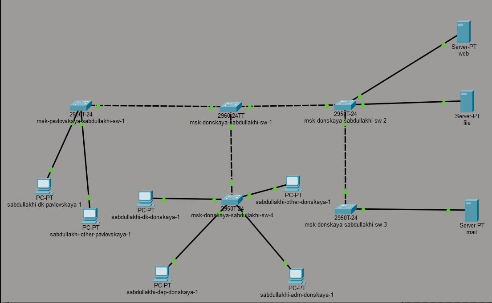
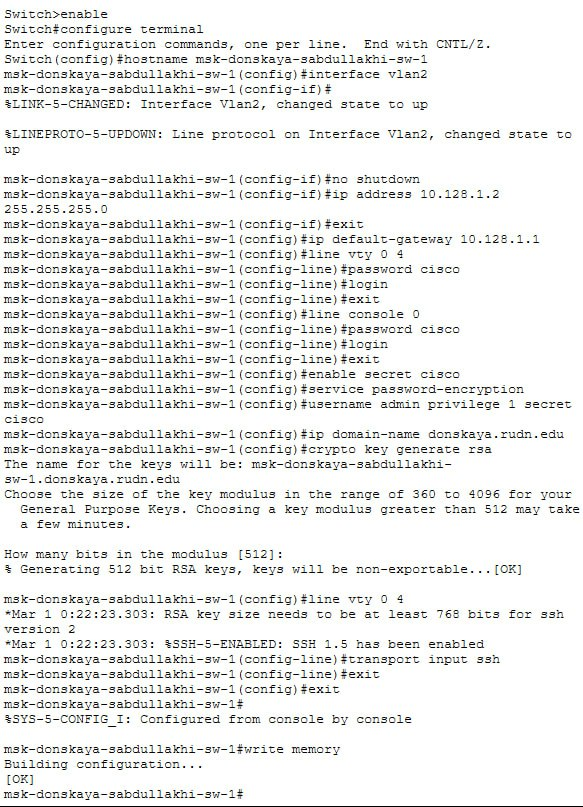
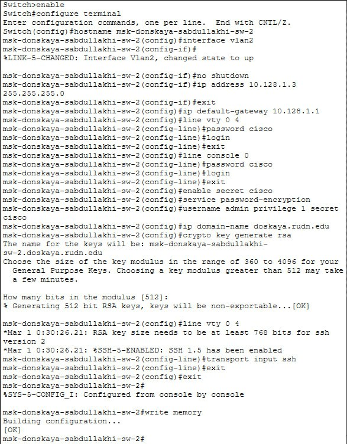
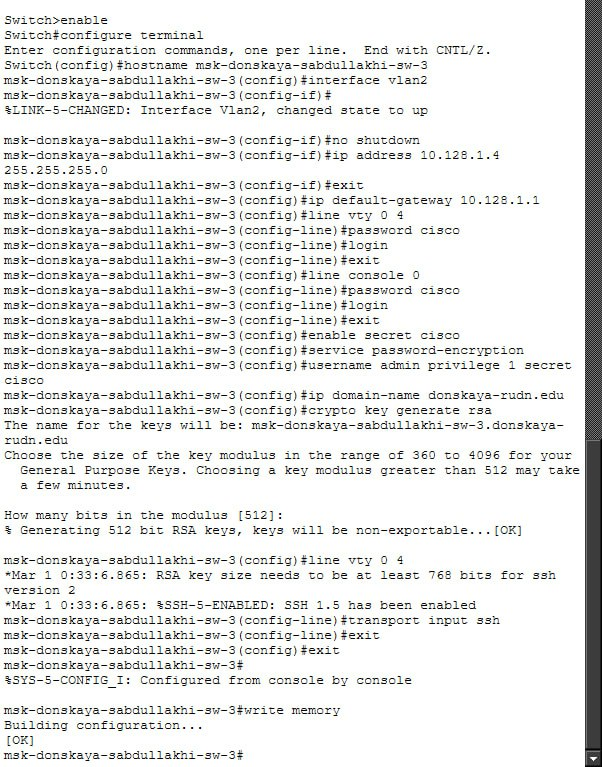
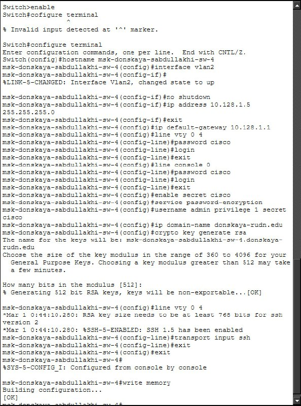
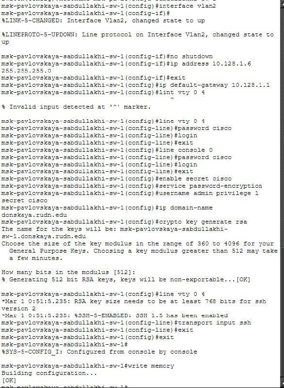

Целью данной лабораторной работы является выполнение первоначальной настройки сетевых коммутаторов в соответствии с заданной топологией L1. Под первоначальной настройкой понимается: присвоение устройству уникального имени; назначение IP адреса для управ- ления устройством; настройка шлюза по умолчанию; конфигурирование пароль- ной защиты на консольном порту и виртуальных терминалах (VTY); настройка защищенного удаленного доступа по протоколу SSH.
Использованные коммутаторы: - msk pavlovskaya sabdullakhi sw 1 - msk donskaya sabdullakhi sw 1 - msk donskaya sabdullakhi sw 2 - msk donskaya sabdullakhi sw 3 - msk donskaya sabdullakhi sw 4






В ходе лабораторной работы выполнено первоначальное конфигурирование пяти коммутаторов согласно схеме сети L1. Каждому устройству присвоено уникальное имя, назначен IP-адрес управления из подсети 10.128.1.0/24, настроен шлюз по умолчанию.
Реализована защита доступа: установлены пароли на console и VTY, настроен привилегированный режим, включено шифрование. Для безопасного удалённого управления на всех коммутаторах настроен доступ по SSH.
Все конфигурации сохранены. Коммутаторы готовы к удалённому администрированию.